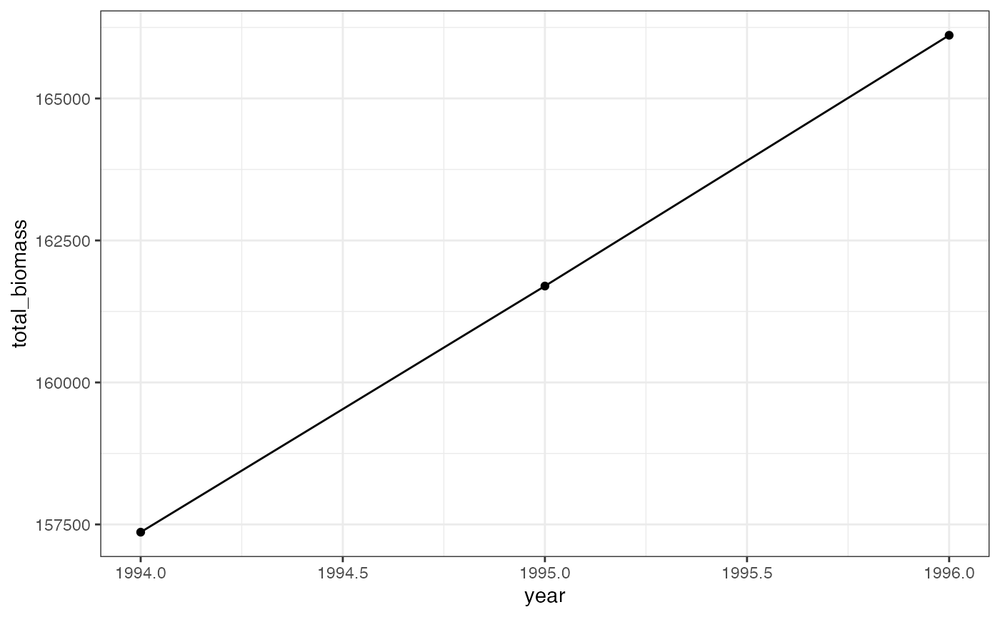

The community_generate and
community_summarize functions are flexible, high-level
functions for generating individual-level body mass and metabolic rate
estimates for all the individuals in a community and summarizing these
measurements at different levels of hierarchy.
Generating estimates using community_generate
community_generate takes a dataframe with species-level
information (AOU, scientific name, or mean and/or standard deviation
body mass) and population sizes, and returns a dataframe of
individual-level mass and BMR measurements for all the entries in the
input data frame.
Simulations using AOU
This workflow is most closely designed to work with the North American Breeding Bird Survey.
Here, we use a synthetic dataset with the same column names as data
downloaded from the North American Breeding Bird Survey
(demo_route_raw). First, we filter the data to remove
poorly-sampled or unidentified species. For speed, we also filter to
records only from the years 1994-1996. This results in a data frame with
species’ abundances for all species from 1994-1996 on this
(hypothetical) route, and additional data fields identifying the
route.
demo_route_raw <- demo_route_raw
demo_route_clean <- demo_route_raw %>%
filter_bbs_survey() %>%
dplyr::filter(year %in% 1994:1996)
head(demo_route_clean)
#> record_id routedataid countrynum statenum route rpid year aou count10
#> 1 900000 9009911011994 900 99 1 101 1994 4730 8
#> 2 900001 9009911011995 900 99 1 101 1995 4730 13
#> 3 900002 9009911011996 900 99 1 101 1996 4730 8
#> 4 900029 9009911011994 900 99 1 101 1994 3570 15
#> 5 900030 9009911011995 900 99 1 101 1995 3570 10
#> 6 900031 9009911011996 900 99 1 101 1996 3570 11
#> count20 count30 count40 count50 stoptotal speciestotal
#> 1 12 15 12 15 5 62
#> 2 9 11 10 10 5 53
#> 3 11 9 13 15 5 56
#> 4 10 14 7 16 5 62
#> 5 16 16 11 16 5 69
#> 6 15 15 18 11 5 70community_generate can take this table and generate
simulated individual measurements with no additional tweaks. It uses the
aou and speciestotal columns from
demo_route_clean to look up species’ mean and standard
deviation body masses based on their AOU and then draw individual size
measurements from a normal distribution with those parameters.
set.seed(22)
demo_route_sims <- community_generate(community_data_table = demo_route_clean)
head(demo_route_sims)
#> record_id routedataid countrynum statenum route rpid year count10 count20
#> 1 900000 9009911011994 900 99 1 101 1994 8 12
#> 2 900000 9009911011994 900 99 1 101 1994 8 12
#> 3 900000 9009911011994 900 99 1 101 1994 8 12
#> 4 900000 9009911011994 900 99 1 101 1994 8 12
#> 5 900000 9009911011994 900 99 1 101 1994 8 12
#> 6 900000 9009911011994 900 99 1 101 1994 8 12
#> count30 count40 count50 stoptotal speciestotal aou sim_species_id genus
#> 1 15 12 15 5 62 4730 4730 Alauda
#> 2 15 12 15 5 62 4730 4730 Alauda
#> 3 15 12 15 5 62 4730 4730 Alauda
#> 4 15 12 15 5 62 4730 4730 Alauda
#> 5 15 12 15 5 62 4730 4730 Alauda
#> 6 15 12 15 5 62 4730 4730 Alauda
#> species individual_mass individual_bmr mean_size sd_size abundance
#> 1 arvensis 35.78463 134.5783 37.475 3.300613 62
#> 2 arvensis 45.67763 160.1614 37.475 3.300613 62
#> 3 arvensis 40.80144 147.7750 37.475 3.300613 62
#> 4 arvensis 38.44147 141.6288 37.475 3.300613 62
#> 5 arvensis 36.78531 137.2509 37.475 3.300613 62
#> 6 arvensis 43.60784 154.9526 37.475 3.300613 62
#> sd_method
#> 1 AOU lookup
#> 2 AOU lookup
#> 3 AOU lookup
#> 4 AOU lookup
#> 5 AOU lookup
#> 6 AOU lookupSimulation given species’ names
If the AOU is not known or not provided,
community_generate will attempt to look up species’ size
parameters based on their scientific name.
Here we generate a version of demo_route_clean with no
aou column:
demo_route_names <- demo_route_clean %>%
left_join(select(sd_table, aou, genus, species)) %>%
select(-aou)
#> Joining, by = "aou"community_generate still runs, but note that the
sd_method here is listed as
Scientific name lookup rather than AOU lookup
(above).
set.seed(22)
demo_route_names_sims <- community_generate(demo_route_names)
head(demo_route_names_sims)
#> record_id routedataid countrynum statenum route rpid year count10 count20
#> 1 900000 9009911011994 900 99 1 101 1994 8 12
#> 2 900000 9009911011994 900 99 1 101 1994 8 12
#> 3 900000 9009911011994 900 99 1 101 1994 8 12
#> 4 900000 9009911011994 900 99 1 101 1994 8 12
#> 5 900000 9009911011994 900 99 1 101 1994 8 12
#> 6 900000 9009911011994 900 99 1 101 1994 8 12
#> count30 count40 count50 stoptotal speciestotal aou sim_species_id genus
#> 1 15 12 15 5 62 4730 4730 Alauda
#> 2 15 12 15 5 62 4730 4730 Alauda
#> 3 15 12 15 5 62 4730 4730 Alauda
#> 4 15 12 15 5 62 4730 4730 Alauda
#> 5 15 12 15 5 62 4730 4730 Alauda
#> 6 15 12 15 5 62 4730 4730 Alauda
#> species individual_mass individual_bmr mean_size sd_size abundance
#> 1 arvensis 35.78463 134.5783 37.475 3.300613 62
#> 2 arvensis 45.67763 160.1614 37.475 3.300613 62
#> 3 arvensis 40.80144 147.7750 37.475 3.300613 62
#> 4 arvensis 38.44147 141.6288 37.475 3.300613 62
#> 5 arvensis 36.78531 137.2509 37.475 3.300613 62
#> 6 arvensis 43.60784 154.9526 37.475 3.300613 62
#> sd_method
#> 1 Scientific name lookup
#> 2 Scientific name lookup
#> 3 Scientific name lookup
#> 4 Scientific name lookup
#> 5 Scientific name lookup
#> 6 Scientific name lookupSimulation given mean size measurements
If species name or AOU are not known, or are not included in this dataset (see [sd_table] for the full set of included species), estimates can still be generated by providing the mean and, if available, standard deviation of body mass directly. If standard deviation is provided, it will be used; if not, it will be estimated based on the scaling relationship between mean and standard deviation of body mass for birds (see the [scaling] vignette).
Here we generate a version of demo_route_clean with no
AOU or species name columns, but with records of mean body size for all
species. Note that the mean body mass must be in a column called
mean_size.
demo_route_means <- demo_route_clean %>%
left_join(select(sd_table, aou, mean_mass)) %>%
select(-aou) %>%
rename(mean_size = mean_mass)
#> Joining, by = "aou"
set.seed(22)
demo_route_means_sims <- community_generate(demo_route_means)
head(demo_route_means_sims)
#> record_id routedataid countrynum statenum route rpid year count10 count20
#> 1 900000 9009911011994 900 99 1 101 1994 8 12
#> 2 900000 9009911011994 900 99 1 101 1994 8 12
#> 3 900000 9009911011994 900 99 1 101 1994 8 12
#> 4 900000 9009911011994 900 99 1 101 1994 8 12
#> 5 900000 9009911011994 900 99 1 101 1994 8 12
#> 6 900000 9009911011994 900 99 1 101 1994 8 12
#> count30 count40 count50 stoptotal speciestotal aou sim_species_id genus
#> 1 15 12 15 5 62 NA NA <NA>
#> 2 15 12 15 5 62 NA NA <NA>
#> 3 15 12 15 5 62 NA NA <NA>
#> 4 15 12 15 5 62 NA NA <NA>
#> 5 15 12 15 5 62 NA NA <NA>
#> 6 15 12 15 5 62 NA NA <NA>
#> species individual_mass individual_bmr mean_size sd_size abundance
#> 1 <NA> 36.13015 135.5035 37.475 2.625949 62
#> 2 <NA> 44.00097 155.9473 37.475 2.625949 62
#> 3 <NA> 40.12150 146.0149 37.475 2.625949 62
#> 4 <NA> 38.24392 141.1095 37.475 2.625949 62
#> 5 <NA> 36.92628 137.6257 37.475 2.625949 62
#> 6 <NA> 42.35426 151.7633 37.475 2.625949 62
#> sd_method
#> 1 SD estimated from mean
#> 2 SD estimated from mean
#> 3 SD estimated from mean
#> 4 SD estimated from mean
#> 5 SD estimated from mean
#> 6 SD estimated from meanHere, we include standard deviation measurements in a column called
sd_size:
demo_route_mean_sds <- demo_route_clean %>%
left_join(select(sd_table, aou, mean_mass, mean_sd)) %>%
select(-aou) %>%
rename(mean_size = mean_mass,
sd_size = mean_sd)
#> Joining, by = "aou"
set.seed(22)
demo_route_mean_sds_sims <- community_generate(demo_route_mean_sds)
head(demo_route_mean_sds_sims)
#> record_id routedataid countrynum statenum route rpid year count10 count20
#> 1 900000 9009911011994 900 99 1 101 1994 8 12
#> 2 900000 9009911011994 900 99 1 101 1994 8 12
#> 3 900000 9009911011994 900 99 1 101 1994 8 12
#> 4 900000 9009911011994 900 99 1 101 1994 8 12
#> 5 900000 9009911011994 900 99 1 101 1994 8 12
#> 6 900000 9009911011994 900 99 1 101 1994 8 12
#> count30 count40 count50 stoptotal speciestotal aou sim_species_id genus
#> 1 15 12 15 5 62 NA NA <NA>
#> 2 15 12 15 5 62 NA NA <NA>
#> 3 15 12 15 5 62 NA NA <NA>
#> 4 15 12 15 5 62 NA NA <NA>
#> 5 15 12 15 5 62 NA NA <NA>
#> 6 15 12 15 5 62 NA NA <NA>
#> species individual_mass individual_bmr mean_size sd_size abundance
#> 1 <NA> 35.78463 134.5783 37.475 3.300613 62
#> 2 <NA> 45.67763 160.1614 37.475 3.300613 62
#> 3 <NA> 40.80144 147.7750 37.475 3.300613 62
#> 4 <NA> 38.44147 141.6288 37.475 3.300613 62
#> 5 <NA> 36.78531 137.2509 37.475 3.300613 62
#> 6 <NA> 43.60784 154.9526 37.475 3.300613 62
#> sd_method
#> 1 Mean and SD provided
#> 2 Mean and SD provided
#> 3 Mean and SD provided
#> 4 Mean and SD provided
#> 5 Mean and SD provided
#> 6 Mean and SD providedSummarizing results using community_summarize
community_summarize reports summary metrics (total
abundance, biomass, and energy use; and mean and standard deviation
biomass and metabolic rate) with flexible grouping. By default, it can
group by year - e.g. giving the total biomass of all birds in each year
of a survey - by species, or both. It can also group by additional
variables via the custom grouping option.
Summarize grouping by year
Here, we summarize grouping by year to show the total biomass of all species of birds in each year surveyed:
annual_summary <- demo_route_sims %>%
community_summarize(level = "year")
head(annual_summary)
#> # A tibble: 3 × 15
#> routedataid count…¹ state…² route rpid year speci…³ total…⁴ total…⁵ total…⁶
#> <chr> <dbl> <dbl> <dbl> <dbl> <int> <chr> <int> <dbl> <dbl>
#> 1 90099110119… 900 99 1 101 1994 aou 1361 157364. 352777.
#> 2 90099110119… 900 99 1 101 1995 aou 1443 161697. 364963.
#> 3 90099110119… 900 99 1 101 1996 aou 1413 166113. 368953.
#> # … with 5 more variables: total_richness <int>, mean_individual_mass <dbl>,
#> # sd_individual_mass <dbl>, mean_metabolic_rate <dbl>,
#> # sd_metabolic_rate <dbl>, and abbreviated variable names ¹countrynum,
#> # ²statenum, ³species_designator, ⁴total_abundance, ⁵total_biomass,
#> # ⁶total_metabolic_rate
ggplot(annual_summary, aes(year, total_biomass)) +
geom_point() +
geom_line()
Summarize grouping by year and species
Grouping by year and species gives the total biomass for each species in each year:
species_annual_summary <- demo_route_sims %>%
community_summarize(level = "species_and_year") %>%
mutate(aou = as.factor(aou))
head(species_annual_summary)
#> # A tibble: 6 × 21
#> routed…¹ count…² state…³ route rpid year aou sim_s…⁴ genus species mean_…⁵
#> <chr> <dbl> <dbl> <dbl> <dbl> <int> <fct> <int> <chr> <chr> <dbl>
#> 1 9009911… 900 99 1 101 1994 3000 3000 Bona… umbell… 532
#> 2 9009911… 900 99 1 101 1994 3151 3151 Stre… chinen… 159
#> 3 9009911… 900 99 1 101 1994 3152 3152 Stre… roseog… 155
#> 4 9009911… 900 99 1 101 1994 3280 3280 Elan… leucur… 346
#> 5 9009911… 900 99 1 101 1994 3460 3460 Buteo plagia… 528.
#> 6 9009911… 900 99 1 101 1994 3550 3550 Falco mexica… 734
#> # … with 10 more variables: sd_size <dbl>, species_designator <chr>,
#> # total_abundance <int>, total_biomass <dbl>, total_metabolic_rate <dbl>,
#> # total_richness <int>, mean_individual_mass <dbl>, sd_individual_mass <dbl>,
#> # mean_metabolic_rate <dbl>, sd_metabolic_rate <dbl>, and abbreviated
#> # variable names ¹routedataid, ²countrynum, ³statenum, ⁴sim_species_id,
#> # ⁵mean_size
ggplot(species_annual_summary, aes(year, total_biomass, color = aou)) +
geom_point() +
geom_line() +
theme(legend.position = "bottom")
Summarize grouping by species
Grouping by species gives the total biomass (etc) for each species over all survey years:
species_summary <- community_summarize(demo_route_sims, level = "species") %>%
mutate(aou = as.factor(aou))
head(species_summary)
#> # A tibble: 6 × 19
#> countrynum statenum route rpid aou sim_spec…¹ genus species mean_…² sd_size
#> <dbl> <dbl> <dbl> <dbl> <fct> <int> <chr> <chr> <dbl> <dbl>
#> 1 900 99 1 101 3000 3000 Bona… umbell… 532 38.7
#> 2 900 99 1 101 3151 3151 Stre… chinen… 159 11
#> 3 900 99 1 101 3152 3152 Stre… roseog… 155 11.0
#> 4 900 99 1 101 3280 3280 Elan… leucur… 346 23.3
#> 5 900 99 1 101 3460 3460 Buteo plagia… 528. 37.8
#> 6 900 99 1 101 3550 3550 Falco mexica… 734 51.0
#> # … with 9 more variables: species_designator <chr>, total_abundance <int>,
#> # total_biomass <dbl>, total_metabolic_rate <dbl>, total_richness <int>,
#> # mean_individual_mass <dbl>, sd_individual_mass <dbl>,
#> # mean_metabolic_rate <dbl>, sd_metabolic_rate <dbl>, and abbreviated
#> # variable names ¹sim_species_id, ²mean_size
ggplot(species_summary, aes((aou), total_biomass, fill = (aou))) +
geom_col() +
theme(legend.position = "bottom")
Summarize with custom grouping
community_generate can use the
level = "custom" setting to group by additional
id_vars. Here, we group by year and
genus:
annual_genera_summary <- community_summarize(demo_route_sims, level = "custom", id_vars = c("year", "genus"))
head(annual_genera_summary)
#> # A tibble: 6 × 11
#> year genus speci…¹ total…² total…³ total…⁴ total…⁵ mean_…⁶ sd_in…⁷ mean_…⁸
#> <int> <chr> <chr> <int> <dbl> <dbl> <int> <dbl> <dbl> <dbl>
#> 1 1994 Acridot… aou 13 1520. 4067. 1 117. 8.52 313.
#> 2 1994 Alauda aou 62 2350. 8686. 1 37.9 3.43 140.
#> 3 1994 Amphisp… aou 52 943. 4312. 1 18.1 0.258 82.9
#> 4 1994 Bonasa aou 45 24056. 41614. 1 535. 39.1 925.
#> 5 1994 Buteo aou 69 36608. 63467. 1 531. 38.2 920.
#> 6 1994 Carduel… aou 50 804. 3802. 1 16.1 1.03 76.0
#> # … with 1 more variable: sd_metabolic_rate <dbl>, and abbreviated variable
#> # names ¹species_designator, ²total_abundance, ³total_biomass,
#> # ⁴total_metabolic_rate, ⁵total_richness, ⁶mean_individual_mass,
#> # ⁷sd_individual_mass, ⁸mean_metabolic_rate
ggplot(annual_genera_summary, aes(year, total_biomass, color = genus)) +
geom_point() +
geom_line() +
theme(legend.position = "bottom")